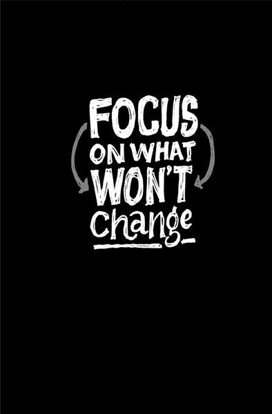

{% include JB/setup %}
{% raw %}
<div>

<h2 id="filepos93891" class="calibre19"><span class="calibre2"><a class="calibre13"></a><strong class="calibre14">Throw less at the problem</strong></span></h2><div class="calibre4"></div>
<p class="calibre7">Watch chef Gordon Ramsay's <em class="italic1">Kitchen Nightmares</em> and you'll see a pattern. The menus at failing restaurants offer too many dishes. The owners think making every dish under the sun will broaden the appeal of the restaurant. Instead it makes for crappy food (and creates inventory headaches).</p>
<p class="calibre17">That's why Ramsay's first step is nearly always to trim the menu, usually from thirty-plus dishes to around ten. Think about that. Improving the current menu doesn't come first. Trimming it down comes first. Then he polishes what's left.</p>
<p class="calibre17">When things aren't working, the natural inclination is to throw more at the problem. More people, time, and money. All that ends up doing is making the problem bigger. The right way to go is the opposite direction: Cut back.</p>
<p class="calibre17">So do less. Your project won't suffer nearly as much as you fear. In fact, there's a good chance it'll end up even better. You'll be forced to make tough calls and sort out what truly matters.</p>
<p class="calibre17">If you start pushing back deadlines and increasing your budget, you'll never stop.</p>
<p class="calibre3"><a class="calibre16"></a></p><div class="calibre4"></div>
</div>

{% endraw %}

